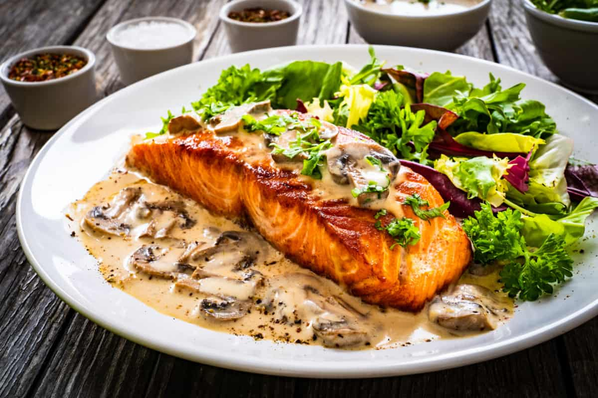

¿Qué comer antes del entreno?
Junto a la rutina habitual en la dieta se pueden incluir algunas modificaciones. Así, antes de ir a entrenar lo mejor es tomar carbohidratos que insuflen de energía al organismo, acompañados de frutas, verduras o cereales, para mejorar el nivel de hidratación. Este punto es importante, para no perder exceso de líquido en el entreno.
¿Cómo recuperar fuerzas tras el entrenamiento?

Después de entrenar lo mejor es que pase un tiempo antes de volver a comer algo, incluso líquido, especialmente si se está en un proceso de pérdida de peso. Pasado este tiempo, hay que rehidratar el organismo y tomar alimentos ricos en proteínas: carnes, huevo, pescado, leche…, todo acompañado de verduras, que refuercen las fibras musculares.
¿Cuándo debe comer un boxeador?
La rutina alimenticia de un boxeador incluye al menos cuatro comidas: desayuno, almuerzo, comida y cena.